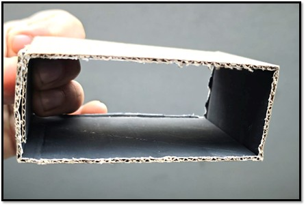
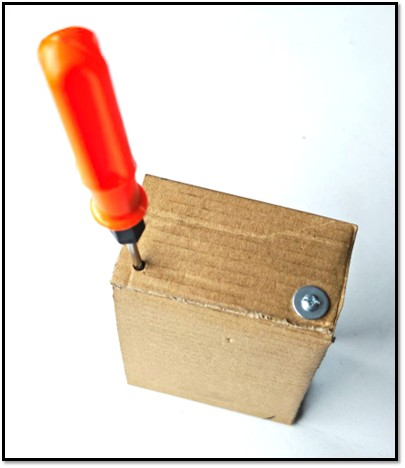
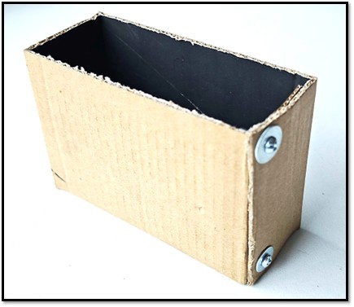
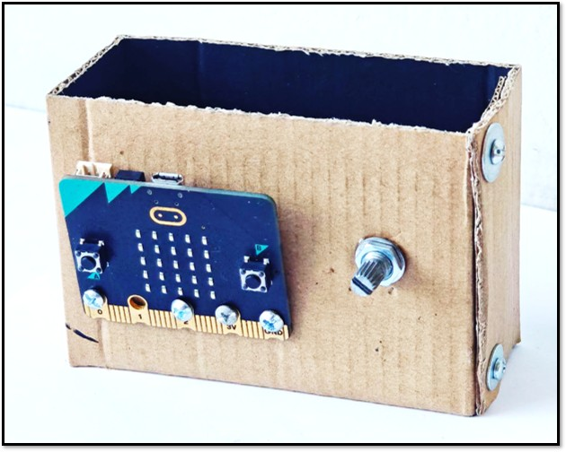

A continuación están los pasos a seguir para construir la estructura en dónde se encontrará el microbit, así como también, el potenciómetro y, en el interior, el zumbador conectados a la placa microbit.
Paso 1
Crear una base de cartón de 2 o 3 milímetros de espesor con la ayuda de tijeras, lápiz y una regla. Hay que tener en cuenta que las líneas negras son para recortarlas y las líneas discontinúas es un doblez. Las medidas se presentan a continuación:

Paso 2
Una vez doblado y ajustado con un par de tuercas y tornillos debe quedar como la imagen que está a la derecha:
  
Paso 3
Instala en un lado del tubo rectangular en la izquierda el Microbit con la ayuda de tornillos y tuercas en los orificios que tiene la placa microbit y a su costado el potenciómetro. Esto se puede apreciar en la siguiente imagen:

Paso 4
Con la ayuda de los cables cocodrilo interconecta de forma interna el microbit con el zumbador y el potenciómetro. Revisa bien las conexiones de la sección "Conexión del circuito" para que funcione correctamente al momento de descargar el código de programación en el microbit.